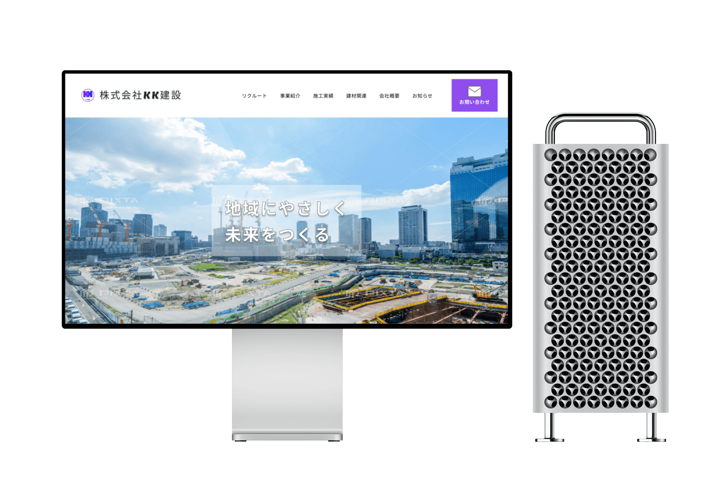

作品について:
トライアル案件として、架空の建設会社のサイトリニューアルを制作。
まず業界のことを知るところから始まるサイト制作でしたが、知らなかった世界を知ることが出来る経験と、自分自身の中に徐々に落とし込んでいく作業がとても楽しいです。
担当
ワイヤーフレームからのデザインカンプまでを作成。
サイトの目的
建設業界の更なる拡大と発展、イメージアップ。業界全体が人材不足のため、一緒に働きたいと思えるようなクリーンなイメージを訴求したいという設定です。
ターゲット
未婚男性。年齢不問。
デザインについて
デザインテイストの設定は「シンプル」と「清潔感」です。
指定のイメージカラーは紫です。
イメージカラーの紫を軸に、清潔感を感じられるように白と青を使用しました。
企業ロゴのデザインは、デザインツールのCanvaで私自身がデザインしたものです。こちらのロゴデザインもシンプルで分かりやすいものにしています。
コーディングについて
デザインのみです。